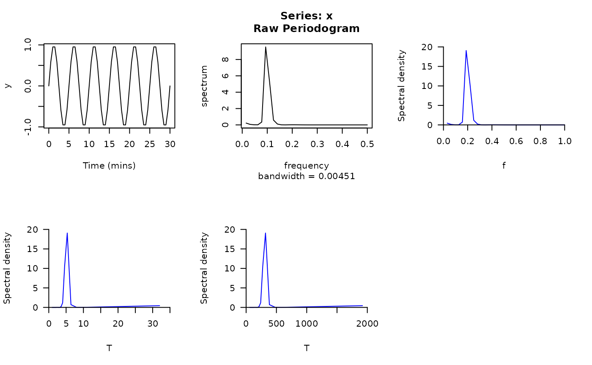

This function produces a plot of a power spectrum. Power spectra can be estimated via spectrum or internally within this function. spectrum can also produce a plot of the power spectrum, but this function is designed to implement automatically some adjustments to this plot to facilitate interpretation. Specifically, under the default settings, this function (a) automatically scales the spectral density (by doubling) so that the area under the periodogram values equals the variance; (b) re-expresses frequencies in terms of the number of cycles per unit time (rather than the number of cycles per time interval), by dividing spectrum's frequencies by the sampling interval (sampling_interval); (c) can plot frequency ("f") or period ("T") on the x-axis; (d) provided the flexibility to re-adjust the x axis units (via x_units). The plot is produced by pretty_plot which can be customised via a named list of arguments that is passed to this function (plot_args).
pretty_pgram(
x,
sampling_interval = NULL,
scale = TRUE,
log = FALSE,
x_units = function(x) x,
x_type = "f",
plot_args = list(type = "l", col = "blue", xlab = x_type, ylab = "Spectral density"),
verbose = TRUE,
...
)An object of class "spec" (see spectrum) or a univariate time series to be passed to spectrum.
A number that defines the sampling interval between sequential observations. If provided, this is used to re-express the frequencies that are returned by spectrum (where they are defined as the number of time cycles per time interval) into the number of cycles per unit time.
A logical input that defines whether or not to scale the spectral densities returned by spectrum (by doubling) so that the area under the periodogram values equals the variance.
A logical input that defines whether or not to log (scaled) spectral densities. This is FALSE by default.
A function that is used to process the x-axis units, after having converted frequencies into the number of cycles per unit time. For example, if the x-axis is given as frequency per minute, function(x) x*60 will convert the x-axis into frequency per hour.
A character input that specifies whether to plot frequencies ("f") or periods ("T" = 1/f) on the x-axis.
A named list of arguments that is passed to pretty_plot to customise the plot that is produced.
A logical input that defines whether or not to print messages to the console defining the actions implemented.
Additional arguments to estimate the spectral density that are passed to spectrum, if x is a univariate time series.
The function returns a plot of the spectral density (i.e., a spectral power plot).
# Define plotting window
pp <- par(mfrow = c(2, 3))
# Define a series of time stamps, with observations every 0.5 mins
delta <- 0.5
t <- seq(0, 30, by = delta)
# Simulate a response, with a period of 5 (i.e., 5 mins between every cycle)
y <- sin(((2*pi)/5)*t)
plot(t, y, type = "l", xlab = "Time (mins)")
# Visualise 'raw' periodogram
stats::spectrum(y, log = "no")
# Default pretty_pgram adjustments
# ... including converting frequency to per unit time (per minute)
# ... 0.2 cycles per minute = 1/0.2 = period of 5 mins:
pretty_pgram(y, sampling_interval = delta)
#> Estimating spectral density...
#> Scaling spectral density...
#> Re-expressing frequencies per unit time...
# Plot period instead of frequency (i.e., expect a period of 5 minutes)
pretty_pgram(y, sampling_interval = delta, x_type = "T")
#> Estimating spectral density...
#> Scaling spectral density...
#> Re-expressing frequencies per unit time...
#> Converting frequencies to periods...
# Convert period into seconds (one period per 5 mins = one period per 300 seconds)
pretty_pgram(y,
sampling_interval = delta,
x_type = "T",
x_units = function(x) x/60
)
#> Estimating spectral density...
#> Scaling spectral density...
#> Re-expressing frequencies per unit time...
#> Converting frequencies to periods...
par(pp)
